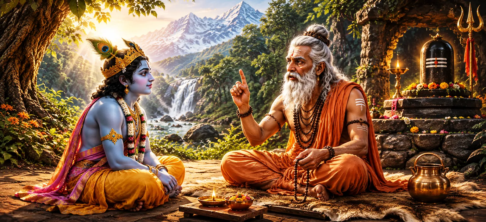

Upamanyu's Instruction on Shiva Devotion
Following his personal testimony of Shiva's glory and mercy, Sage Upamanyu turns to address Krishna's specific request for spiritual direction. Chapter 2 transitions from inspirational vision to explicit discipline, outlining the essential tenets of Shiva Bhakti (devotion), the necessity of internal and external purity, and the methodology of spiritual practice required to gain Lord Shiva's supreme favor.
Upamanyu explains that devotion to Shiva is not merely a mental sentiment, but a complete transformation of thought, speech, and action. He instructs Krishna on the primary role of faith, the importance of receiving sacred mantra initiation (Diksha), and the continuous practice of the six-syllabled or five-syllabled Shiva mantra. Through this guidance, Upamanyu equips Krishna with the precise spiritual framework needed before he undertakes his tapas (penance) on Kailasa.
The chapter highlights how true devotion melts karmic obstructions and purifies the intellect. Upamanyu reveals that Mahadeva yields easily to sincere surrender, provided the devotee maintains ethical integrity, single-pointed concentration, and steady adherence to sacred vows.
Chapter 2 at a Glance
Sacred Context
The second chapter of Uma Samhita in the Shiva Purana.
Chapter Focus
Practical guidance on Shiva Bhakti, sacred vows, and mantra discipline.
Teacher & Student
Sage Upamanyu acts as the enlightened preceptor instructing Krishna.
Core Mantra
Emphasis on the Panchakshara Mantra ("Namah Shivaya") as the ultimate refuge.
Dual Purity
Integration of external ritual cleanliness and internal moral purity.
Goal of Worship
Attainment of Shiva's grace for fulfilling desire and achieving liberation.
Contents of This Chapter
- 01 The Essential Nature of Shiva Bhakti →
- 02 The Importance of Sacred Diksha →
- 03 Glory of the Panchakshara Mantra →
- 04 Rules of Internal and External Purity →
- 05 Methods of Meditating on Lord Shiva →
- 06 Dedication of All Actions to Mahadeva →
- 07 Overcoming Obstacles on the Spiritual Path →
- 08 The Fruits of Unflinching Devotion →
- 09 Specific Vows Prescribed for Krishna →
- 10 Completion of Upamanyu's Precepts →
The Essential Nature of Shiva Bhakti
Sage Upamanyu begins his instruction by defining Bhakti as the root cause of all spiritual achievements. He explains to Krishna that devotion to Shiva is not an accidental emotion but the culmination of accumulated merit from countless lifetimes. True devotion manifests as an unbroken stream of love and reverence directed toward the lotus feet of Parameshwara.
Upamanyu categorizes Bhakti into distinct levels, ranging from ritualistic worship driven by desire to pure, unmotivated devotion (Nishkama Bhakti). He notes that while Lord Shiva fulfills every desire of those who seek worldly boons, the highest form of devotion asks only for eternal remembrance and service to Shiva himself.
He emphasizes that Bhakti cleanses the intellect of delusion and ignorance. When a practitioner develops steady affection for Shiva, all worldly anxieties subside, giving rise to profound inner peace and spiritual strength.
The Importance of Sacred Diksha
Upamanyu instructs Krishna on the necessity of formal initiation (Diksha) under a qualified spiritual preceptor. Diksha acts as the bridge connecting the seeker's individual consciousness with the divine grace of Mahadeva. It purifies the disciple and imparts the subtle power needed to chant sacred mantras effectively.
The sage explains that initiation destroys past karmic impurities (pasa) that bind the jiva (soul). Without proper initiation, spiritual practices often remain superficial. Through Diksha, the guru transmits spiritual energy, establishing a direct link between the disciple and Shiva.
He assures Krishna that because he has approached with genuine humility, he is a fully fit recipient for the sacred teachings and the powerful mantras of the Shaiva tradition.
Glory of the Panchakshara Mantra
A central portion of Chapter 2 is dedicated to the supreme power of the Panchakshara Mantra: "Namah Shivaya" (and its Pranava form, "Om Namah Shivaya"). Upamanyu declares that this mantra is the essence of all scriptures, the refuge of all beings, and the ultimate vessel for crossing the ocean of worldly existence.
The five syllables—Na, Ma, Shi, Va, Ya—represent the five elements, the five aspects of Shiva, and the cosmic operations of creation, preservation, dissolution, concealment, and grace. Continuous meditation on these syllables align the practitioner's mind with universal rhythm.
Upamanyu instructs Krishna to repeat this sacred formula with intense mindfulness, reverence, and understanding of its subtle meaning. He asserts that no obstacle can withstand the focused repetition of Shiva's holy name.
Rules of Internal and External Purity
Upamanyu emphasizes that spiritual energy must be contained within a purified body and mind. He details the principles of Saucha (cleanliness). External purity is achieved through proper bathing, wearing clean garments, applying sacred ash (Bhasma), and keeping the physical space consecrated.
Internal purity, however, is deemed even more critical. It involves truthfulness, harmlessness (Ahimsa), freedom from anger, control over the senses, and the elimination of envy and egoism. Upamanyu warns that ritual acts performed without internal purity yield little spiritual fruit.
By harmonizing outer cleanliness with mental discipline, the seeker creates an ideal vessel capable of holding divine light and sustaining rigorous meditative practices.
Methods of Meditating on Lord Shiva
The sage teaches Krishna the specific techniques for contemplating Lord Shiva during worship and solitude. He describes both the Nirguna (formless, transcendent) meditation and the Saguna (manifested form with qualities) visualization.
For Saguna meditation, Upamanyu instructs Krishna to visualize Shiva seated in the lotus posture upon Kailasa, radiant like a mountain of silver, adorned with the crescent moon, holding the trident and deer, and accompanied by Parvati. This form provides a steady focus for the mind.
For advanced seekers, Nirguna meditation requires directing the mind toward Shiva as pure awareness, unconditioned consciousness, and limitless bliss beyond all dualities.
Dedication of All Actions to Mahadeva
Upamanyu stresses the practice of Shivarpana—dedicating all thoughts, words, and daily actions to Lord Shiva. By renouncing the personal sense of agency and surrendering the fruits of work, one remains untainted by karmic consequences.
Every movement should become a mudra, every word a mantra, and every breath an offering to the divine presence within. This attitude converts ordinary life into continuous worship.
He explains that when Krishna performs his tapas with this attitude of complete surrender, Lord Shiva will be swiftly pleased and grant his heart's desire without delay.
Overcoming Obstacles on the Spiritual Path
Every spiritual journey encounters trials such as mental lethargy, doubt, distraction, and attachment to worldly comforts. Upamanyu prepares Krishna by explaining how to conquer these inner hindrances through patience and spiritual endurance.
Doubt is removed through spiritual study and preceptor's guidance; lethargy is conquered through disciplined routine and breath control; and distraction is quelled by anchoring the mind in constant remembrance of Shiva.
The sage reassures Krishna that Shiva's grace actively protects and assists those who face spiritual trials with unwavering determination.
The Fruits of Unflinching Devotion
Upamanyu describes the temporal and spiritual rewards that flow naturally from sincere Shiva Bhakti. On a worldly level, a true devotee attains health, long life, righteous progeny, status, and freedom from fear.
On a spiritual level, the devotee experiences clarity of mind, mastery over senses, divine visions, and ultimate liberation (Moksha) from the cycle of birth and death.
However, Upamanyu reminds Krishna that the greatest reward of Shiva worship is Shiva himself—the eternal experience of divine proximity and unshakeable joy.
Specific Vows Prescribed for Krishna
To ensure Krishna's upcoming penance yields swift success, Sage Upamanyu prescribes specific austere vows (vratas). He outlines periods of fasting, silence (Mauna), single-minded meditation, and ritual worship of the Shiva Linga.
He instructs Krishna to construct a sacred altar, perform daily ablutions, apply holy ash, and chant the Panchakshara Mantra with fixed counts each day while keeping his mind withdrawn from all external engagements.
These detailed instructions bridge the gap between general spiritual principles and practical execution, preparing Krishna completely for his arduous undertaking.
Completion of Upamanyu's Precepts
Chapter 2 concludes with Krishna receiving Upamanyu's instructions with profound gratitude and veneration. Having absorbed the sacred principles of Shiva Bhakti, mantra discipline, and ritual preparation, Krishna feels spiritually empowered and ready to begin his intense penance.
Sage Upamanyu blesses Krishna, assuring him that Lord Shiva will certainly appear before him and grant his desired boon. Krishna bows deeply to his spiritual guru and prepares to enter deep samadhi on the holy mountain of Kailasa.
Six Spiritual Lessons from Chapter 2
Combine Wisdom with Discipline
Devotion requires structured practice, vow adherence, and inner discipline to bear fruit.
Power of Sacred Mantra
The Panchakshara Mantra is an inexhaustible source of spiritual strength and purification.
Inner & Outer Cleanliness
Pure actions must be matched with a mind free from anger, ego, and deceit.
Role of Spiritual Preceptor
Guru's guidance and initiation awaken dormant spiritual energy in a seeker.
Surrender of Actions
Dedicating every deed to Shiva frees the practitioner from karmic bondage.
Unshakable Determination
Obstacles disappear when a seeker approaches austerity with firm resolve and trust.
Spiritual Reflection
Chapter 2 serves as a timeless guide for transforming devotion into a lived spiritual science. Upamanyu's dialogue with Krishna demonstrates that even divine beings respect the sacred order of guru-shishya lineage and systematic practice. It highlights that true grace is not arbitrary—it responds directly to a heart cleansed by virtue, focused through mantra, and surrendered to the divine will.
Bringing Chapter 2 into Daily Life
The practical instructions in this chapter can be integrated into everyday living. Practicing short moments of silent mantra chanting ("Om Namah Shivaya") during routine tasks brings mental calmness and reduces stress.
Maintaining physical cleanliness along with truthfulness and non-violence in communication purifies one's environment and relationships. Viewing daily efforts as offerings to God removes ego and anxiety about results.
Finally, approaching life's difficulties with patience and reliance on inner spiritual discipline mirrors Krishna's readiness to follow Upamanyu's sacred precepts.
Key Names and Ideas
Unflinching devotion and love directed toward Lord Shiva.
Sacred spiritual initiation received from an enlightened preceptor.
The holy five-syllabled mantra "Namah Shivaya".
Purity of body, mind, speech, and surroundings.
The practice of dedicating all actions and their fruits to Shiva.
Sacred vows and disciplines undertaken for spiritual purification.
Chapter Summary
Uma Samhita Chapter 2 contains Sage Upamanyu's practical spiritual instructions to Lord Krishna on the methodology of worshipping Lord Shiva. Upamanyu defines the nature of true Shiva Bhakti, highlighting that unmotivated devotion purifies the mind and leads to ultimate peace. He instructs Krishna on the necessity of formal initiation (Diksha), the glory of the sacred Panchakshara Mantra ("Namah Shivaya"), and the dual requirements of internal moral purity and external cleanliness. Furthermore, Upamanyu prescribes specific techniques for Saguna and Nirguna meditation, the dedication of all actions to Mahadeva (Shivarpana), and methods to overcome obstacles on the path. He outlines precise vows, fasts, and recitation routines for Krishna to follow during his penance at Kailasa. The chapter ends with Krishna accepting these precepts with profound reverence, fully prepared to embark on his severe tapas.
Frequently Asked Questions
① What is the main topic of Uma Samhita Chapter 2?
The chapter focuses on Sage Upamanyu instructing Krishna on the essential principles of Shiva Bhakti (devotion), including internal purity, outer disciplines, initiation, and the repetition of the Panchakshara Mantra.
② What mantra does Upamanyu emphasize to Krishna?
Sage Upamanyu emphasizes the five-syllabled sacred mantra "Namah Shivaya" (or with Pranava, "Om Namah Shivaya") as the essence of all Vedas and the primary means for liberation.
③ How does Upamanyu define true devotion to Shiva?
Upamanyu defines true devotion as unshakeable faith combined with ethical living, mental surrender, meditation on Shiva's formless and Saguna aspects, and total dedication of all actions to Shiva.
④ Why is initiation (Diksha) important according to Upamanyu?
Upamanyu explains that spiritual initiation from a competent Guru cleanses past karmic impressions and grants authorization to perform high austerities and mantra Japa effectively.
⑤ What preparation does Krishna receive in this chapter?
Krishna receives theoretical and practical instructions regarding worship, purity, vow discipline, and sacred mantra practice to prepare him for his upcoming severe penance.
⑥ How does Chapter 2 build upon Chapter 1?
While Chapter 1 recounts how Krishna met Upamanyu and heard the sage's glorious vision of Shiva, Chapter 2 transitions from inspiration to practical spiritual instruction on worshipping Shiva.
“Let your mind be fixed on Shiva, your tongue chant His sacred name, and all your actions be surrendered unto His lotus feet.”
Continue Through Uma Samhita
Chapter 2 provides Krishna with the essential instructions for worshipping Shiva. With this spiritual foundation established, the journey continues as Krishna enters deep penance to invoke the Lord's supreme grace.